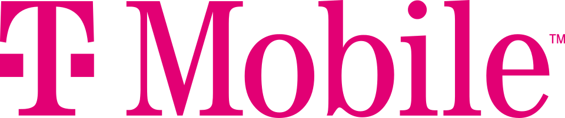

T-모바일 US T-Mobile US
T-모바일 US(T-Mobile US)는 워싱턴주 벨뷰에 본사를 둔 미국의 무선 네트워크 운영업체이다. 무선 음성·데이터 서비스와 가상 이동통신망용 호스트 네트워크를 제공한다.
최종 업데이트

T-모바일 US는 어떤 브랜드인가
회사는 T-모바일과 메트로 바이 T-모바일 브랜드로 미국에서 무선 음성 및 데이터 서비스를 제공한다. 여러 모바일 가상 이동통신망 사업자의 호스트 네트워크 역할도 담당한다.
2020년 Sprint와의 합병을 완료한 뒤 Sprint의 단독 소유주가 됐으며 같은 해 Sprint 브랜드 운영을 중단했다. 2024년 6월 13일 기준 시장 점유율은 31.43%로, Verizon에 이어 미국에서 두 번째로 큰 무선 이동통신사이다.
연간 수익은 약 800억 달러이다.
T-모바일 US는 어떻게 시작되고 성장했나
John W. Stanton이 1994년 Western Wireless Corporation의 사업으로 VoiceStream Wireless를 설립했다.
Deutsche Telekom AG는 2001년 다수의 소유권을 확보하고 T-모바일 브랜드를 따라 회사 이름을 변경했다. 2013년에는 역인수 방식으로 MetroPCS를 인수하고 나스닥 증권거래소에 상장했다.
2020년 4월 1일 Sprint와의 합병을 완료했으며, Sprint 브랜드는 같은 해 8월 2일 공식적으로 운영을 중단했다.
T-모바일 US의 브랜드 아이덴티티는 무엇인가
T-모바일과 메트로 바이 T-모바일을 함께 운영하며 여러 가상 이동통신망 사업자에 호스트 네트워크를 제공한다.
T-모바일 US의 대표 제품과 서비스는 무엇인가
T-모바일 브랜드를 통해 미국의 무선 음성 및 데이터 서비스를 제공하고, 메트로 바이 T-모바일 브랜드로도 이동통신 서비스를 운영한다. 자체 가입자 대상 서비스 외에도 다수의 모바일 가상 이동통신망 사업자가 사용할 수 있는 호스트 네트워크를 제공한다.
Sprint 합병 과정에서는 연방 Universal Service Fund의 Lifeline Assistance 프로그램 보조금을 받는 서비스인 Assurance Wireless를 인수했다.
T-모바일 US는 지금 어떤 상태인가
최대 주주는 독일 본에 본사를 둔 다국적 통신회사 Deutsche Telekom AG이며, 2023년 4월 기준 지분 51.4%를 보유한다. 2024년 6월 13일 기준 미국 무선 이동통신 시장 점유율은 31.43%이다.
본사는 워싱턴주 벨뷰에 있으며 연간 수익은 약 800억 달러이다.
T-모바일 US 로고는 어떻게 변해왔나
자주 묻는 질문
T-모바일 US는 어느 나라 브랜드인가요?
T-모바일 US는 미국의 기술·전자 브랜드입니다.
T-모바일 US는 언제 설립되었나요?
T-모바일 US는 2001년 설립되었습니다.
T-모바일 US의 브랜드 아이덴티티는 무엇인가요?
T-모바일과 메트로 바이 T-모바일을 함께 운영하며 여러 가상 이동통신망 사업자에 호스트 네트워크를 제공한다.
T-모바일 US의 대표 제품은 무엇인가요?
T-모바일 브랜드를 통해 미국의 무선 음성 및 데이터 서비스를 제공하고, 메트로 바이 T-모바일 브랜드로도 이동통신 서비스를 운영한다.
T-모바일 US는 현재 어떤 상태인가요?
최대 주주는 독일 본에 본사를 둔 다국적 통신회사 Deutsche Telekom AG이며, 2023년 4월 기준 지분 51.4%를 보유한다.
T-모바일 US의 창업자는 누구인가요?
T-모바일 US의 창업자는 John W. Stanton입니다(위키데이터 기준).
T-모바일 US의 본사는 어디에 있나요?
T-모바일 US의 본사는 벨뷰에 있습니다(위키데이터 기준).
출처와 검증
T-모바일 US 관련 참고: 공식 웹사이트 · 위키데이터 Q3511885 · 한국어 위키백과 · 영어 위키백과. 브랜드명은 한글과 원어를 함께 표기하되 데이터에 없는 표기는 만들지 않습니다. 기원 국가·설립연도는 검수된 정의문에서 확인된 값을 우선하고, 없을 때만 공식 웹사이트 URL이 일치하는 위키데이터 개체의 값을 씁니다. 위키데이터 값은 2026-09-12 기준입니다.